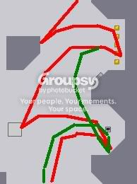

lovely how something as simple as a corner jump can grab a 0th. lovely how something as simple as a corner jump can grab a 0th.
lovely how something as simple as a corner jump can grab a 0th. lovely how something as simple as a corner jump can grab a 0th.That was pretty sweet.  Those jumps of the side of the blocks are ridiculous.
Those jumps of the side of the blocks are ridiculous.
Those jumps of the side of the blocks are ridiculous.Bravo, man. That's a great score.
Hendor: the triple jumps are actually easier than they look, they need less timing than double jumping off a bounceblock in my opinion 
Thanks Alex
The hard part was getting the timing right on the way up to manipulate the rocket to not get in my way.
Thanks Alex
The hard part was getting the timing right on the way up to manipulate the rocket to not get in my way.
Ah, I see. I kinda did one when I tried. But after watching you run again I think I may see a minor improvement. When you're getting the final switch in the bottom right, I think it might be faster to just jump out from the 5 coins and then fall down into the switch cave below, just like at the top when getting the third switch, rather than bouncing off the bounce-block. In the image, if this works, the red is you and the green is my proposition. Don't know if you'd want to try it again just for that little bit, but anyone else can if they want.

Hendor: the jump i do off the wall in that final alcove would have less hangtime than doing a jump off where the slope starts, which is what you would have to do if you jumped and fell straight in. Even so, might be faster.... Might try later
Might try later BAH! Away by 2 frames, I'll try it another day.
Grabbed the 4th... woot.
Nice Rocket
I got the 7th... without any of those triple jumps... yeeeah
I got the 7th... without any of those triple jumps... yeeeah
Bwahaha, one of my 0th's stood up to an attack by johnny ")
You can also do a second corner jump on the way down to go a bit faster. I did it by accident on my first try. Grabbed 10th.
Edit: Improved and grabbed 6th, without corner jump.
wow, evryone's getting highscores on this map. maybe i should try too.
*goes off to play 23-2*
*goes off to play 23-2*
Ok. Finnaly I grabed it. More than half a second... shame on L3X. 
Hmmm, after looking at my run I think it can be improved a lot yet. I'll be waiting.
Hmmm, after looking at my run I think it can be improved a lot yet. I'll be waiting.
Wow, good job. Only difference I saw is that you beat the rocket in the top left corner when transfering to the right side. Guess thats all it takes. Nice 
wow, evryone's getting highscores on this map. maybe i should try too.
*goes off to play 23-2*
Yeah, the highscores on 23-2 are pretty slow.
yeah, but the top scores a pretty good 
nice johnny, but over 107 should be possible. I'll have to find out....
yeah, but the top scores a pretty good
Yeah, all the scores above 103 are pretty good. Johnny's one is awesome.
Yeah sure, say all the ones above 103 just cause yours is 103.050. If yours was 102.500 like mine youd say 102.5. lol Smoooth  Just Kidding. Mine could definitly use some improvement
Just Kidding. Mine could definitly use some improvement
Just Kidding. Mine could definitly use some improvementJohnny's run isn't all that awesome....
I almost broke 106... Im comin after ya guys...
Yeah sure, say all the ones above 103 just cause yours is 103.050. If yours was 102.500 like mine youd say 102.5. lol Smoooth
Haha, maybe I should have said 104 then. My run filled the gap between blobglob and zapkt. Mine is the only 103 run. I could improve it by a lot, but just too lazy. I did that run in ten minutes anyway.
Johnny's run isn't all that awesome....
It's better than yours at least...
You mean my 102.950 isn't ?yeah, but the top scores a pretty goodYeah, all the scores above 103 are pretty good. Johnny's one is awesome.

EDIT : Ok, it wasn't. The 103.725 is better